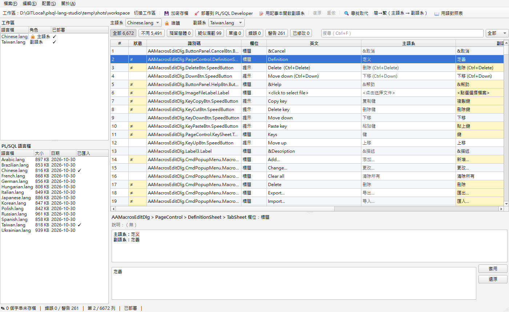
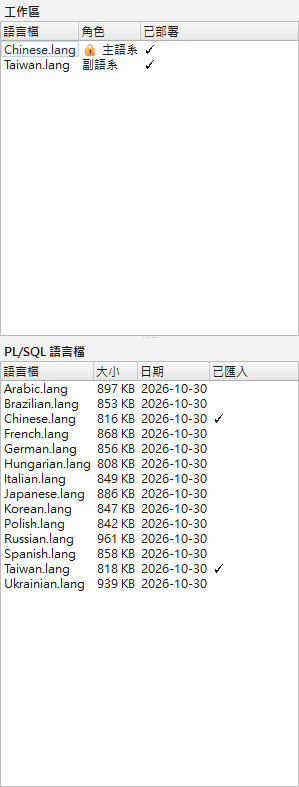
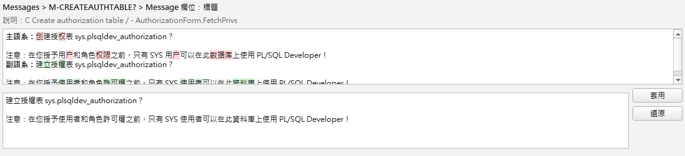
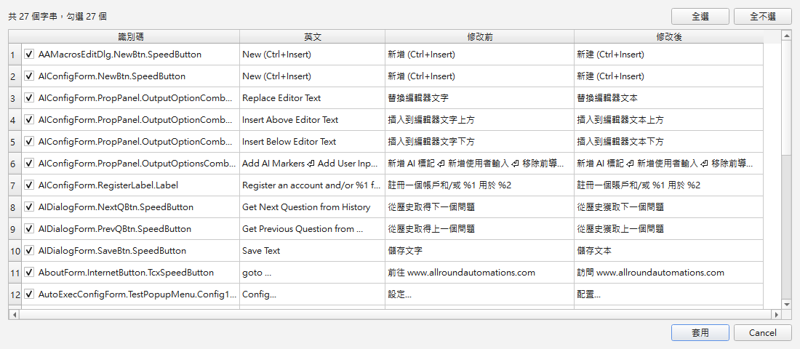
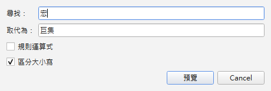
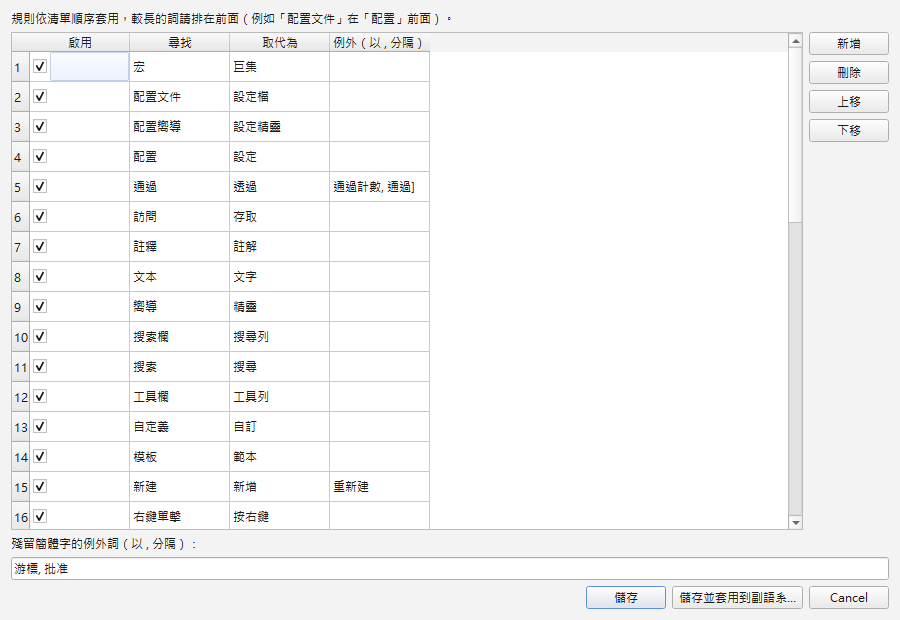
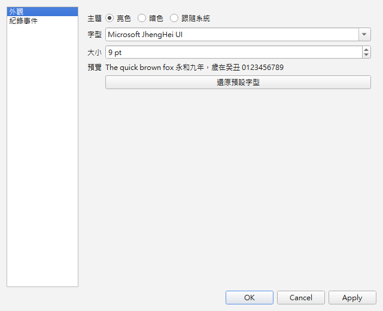
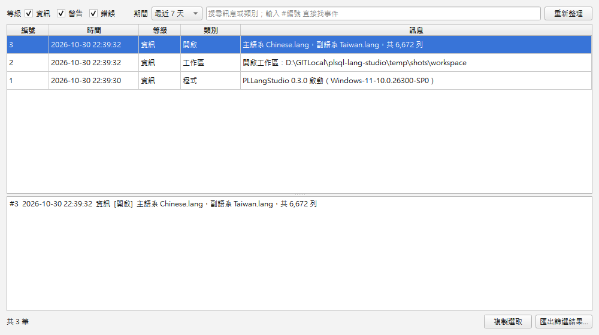
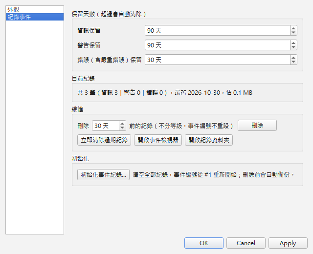

PLLangStudio 使用說明
PLLangStudio 是幫 PL/SQL Developer「換說法」的工具。它可以打開 PL/SQL Developer 的語言檔，把兩種語言並排比對，讓你修改介面上的中文翻譯，改完再放回去。
左側可以搜尋關鍵字；在程式的任何對話框按 F1，會直接開到那個功能的說明；點截圖可以放大。
這個工具在做什麼
PL/SQL Developer 的選單、按鈕、訊息會顯示成什麼文字，都寫在 Languages 資料夾裡的語言檔（副檔名 .lang）。例如 Taiwan.lang 就是繁體中文版的介面文字。
問題是：
- 🔒 語言檔被加密了：用記事本打開只會看到亂碼，沒辦法直接改。
- 🔍 很難比對：想知道「英文原文是什麼」、「簡體版怎麼翻」，沒有工具可以並排看。
- ⚠️ 很容易改壞：語言檔有固定格式，少一行或多一行，整個介面翻譯就會亂掉。
| 它幫你做的事 | 就像是… |
|---|---|
| 自動解密語言檔，讓你看得懂 | 把上鎖的日記本打開 |
| 把兩種語言並排比對，連英文原文一起顯示 | 考卷旁邊放著標準答案 |
| 只讓你改「翻譯」，格式不會被改壞 | 只能在空格裡填答案，題目不能塗改 |
| 改完再加密放回去 | 把日記本重新鎖好放回抽屜 |
先認識幾個名詞
| 名詞 | 意思 | 舉例 |
|---|---|---|
| 語言檔 | PL/SQL Developer 的介面翻譯檔，一種語言一個檔案 | Taiwan.lang、Chinese.lang |
| 筆 | 語言檔裡「一個介面元件」的翻譯資料 | 「取消」按鈕是一筆 |
| 字串 | 一筆裡面一段要翻譯的文字。一筆可以有好幾個字串，例如按鈕的「標題」和滑鼠移上去時的「提示」 | 標題「&取消」、提示「關閉視窗」 |
| 識別碼 | 每一筆的「身分證字號」，由視窗名稱和元件名稱組成，靠它在不同語言檔之間找到同一筆 | AAMacrosEditDlg.ButtonPanel.CancelBtn.Button |
| 英文原文 | 每一筆都附有英文，所有語言檔的英文都一樣，是翻譯的來源 | &Cancel |
| 主語系 | 拿來參考的語言檔，只能看不能改（🔒 唯讀），預設是簡體中文 Chinese.lang | 像「參考答案」 |
| 副語系 | 你要修改的語言檔，預設是繁體中文 Taiwan.lang | 像「你的作業」 |
| 工作區 | 放你修改中檔案的資料夾。所有修改都先在這裡進行，不會直接動到 PL/SQL Developer | 像「草稿本」 |
| 部署 | 把工作區改好的語言檔放回 PL/SQL Developer 讓它生效 | 像「把作業交出去」 |
| 用語對照表 | 一份「哪個詞要換成哪個詞」的清單，可以重複使用 | 「配置」→「設定」 |
| 例外詞 | 用語對照表裡刻意「不要換」的詞 | 「新建→新增」但「重新建立」不要變成「重新增立」 |
第一次使用
雙擊 PLLangStudio.exe 就能使用，不需要安裝。第一次打開時，程式會自動：
- 在 exe 旁邊建立
workspace（工作區）資料夾。如果那裡無法寫入（例如 exe 放在C:\Program Files），會改建在文件\PLLangStudio\workspace。 - 找到 PL/SQL Developer 的語言資料夾，預設是
C:\Program Files\PLSQL Developer 17\Languages。找不到時請用 檔案 ▸ PL/SQL 語言目錄… 自己選。 - 把
Chinese.lang（簡體）和Taiwan.lang（繁體）複製一份到工作區。 - 打開比對畫面：主語系＝簡體，副語系＝繁體。
畫面介紹

| 名稱 | 用途 |
|---|---|
| 選單列 | 檔案（存檔、部署、切換工作區）、編輯（復原、尋找、批次工具）、配置（外觀、紀錄事件、事件檢視器）、關於（使用說明） |
| 工具列 | 最常用的按鈕：切換工作區、💾 加密存檔、🚀 部署、📝 記事本、復原、重做、批次工具 |
| 檔案清單（左側） | 上方是「工作區」裡的語言檔，標著哪個是主語系（🔒 唯讀）、哪個是副語系；下方是 PL/SQL Developer 裡所有的語言檔。中間的分隔線可以上下拖曳 |
| 主語系／副語系選擇 | 用下拉選單換成任何一種語言。兩邊不能是同一個檔案，另一邊已選的檔案會變成灰色 |
| 篩選和搜尋 | 只看某一種狀態的列，或用關鍵字搜尋 |
| 對照表格 | 一列就是一個字串，主語系和副語系永遠在同一列，捲動時不會錯位 |
| 詳細區（下方） | 顯示選到那一列的完整資訊，並可以編輯多行文字 |
| 狀態列 | 還有幾個字串沒存檔、有幾個錯誤或警告、目前在第幾列、是否已部署 |
在檔案清單上按右鍵

| 選項 | 作用 |
|---|---|
| 設為主語系 | 把這個語言檔當成參考 |
| 設為副語系 | 把這個語言檔當成要修改的對象 |
| 匯入工作區 | （下方清單）把 PL/SQL Developer 的語言檔複製到工作區，直接雙擊也可以 |
| 用記事本開 .txt | （上方清單）用記事本打開解密後的文字檔 |
| 從工作區移除… | （上方清單）把用不到的語言檔從工作區拿掉。會先備份到 backup\，PL/SQL Developer 裡的檔案不受影響。目前的主語系、副語系不能移除 |
| 開啟所在資料夾 | 在檔案總管裡找到這個檔案 |
修改一個翻譯
假設你想把「取消」按鈕的文字改成「放棄」：
- 找到那一列：在搜尋框輸入
取消，搜尋範圍選「副語系」。 - 開始編輯：在那一列的「副語系」格子上雙擊，或選好那一列後按 F2。
- 輸入新文字：輸入
&放棄，按 Enter，游標會自動跳到下一列，方便連續修改。 - 確認修改：那一列的狀態會出現藍色的 ✎，代表「已修改、還沒存檔」。
- 改錯了？ 按 Ctrl+Z 復原，Ctrl+Y 重做。
- 存檔：按 Ctrl+S。這時只存進工作區，PL/SQL Developer 還看不到。
- 部署：檔案 ▸ 部署到 PL/SQL Developer…，見存檔和部署。
& 不要刪掉！它是快速鍵記號：& 後面的字在選單或按鈕上會加底線，按住 Alt 再按那個鍵就能觸發。中文翻譯常把快速鍵寫在括號裡，例如 &Save As 翻成 另存為(&A)。英文有 &、翻譯卻沒有時，程式會顯示「警告」。多行的字串怎麼改？
有些說明文字有好幾行，表格格子沒辦法直接改（欄位會顯示「標題（多行）」）。這時點選那一列，在下方詳細區的編輯框裡修改（可以按 Enter 換行），再按「套用」；想放棄就按「還原」。
詳細區會告訴你什麼？

- 元件路徑：這段文字在哪個視窗、哪個元件上。
- 說明：PL/SQL Developer 寫給翻譯者看的提示，幫助你理解原意。
- 差異標色：把主語系和副語系一個字一個字比對： 紅底 主語系有、副語系不一樣的字； 綠底 副語系改過或多出來的字； 深紅底白字 殘留的簡體字，應該改成繁體。
表格符號、錯誤與警告
「狀態」欄會出現這些符號，副語系的格子也會塗上對應的底色。把滑鼠移到狀態格子上會顯示詳細原因。
| 符號 | 名稱 | 意思 | 要不要處理？ |
|---|---|---|---|
≠ | 不同 | 主語系和副語系的文字不一樣 | 通常正常（簡體和繁體本來就不同） |
✎ | 已修改 | 你改過，還沒存檔 | 記得按 Ctrl+S |
簡 | 殘留簡體 | 副語系裡還有簡體字，例如「后」應該是「後」 | ✅ 建議修正 |
⚠ | 疑似漏翻 | 副語系跟英文一模一樣，可能忘了翻譯 | 看情況，專有名詞可以不翻 |
◐ | 單邊 | 只有其中一邊有這一筆，常見於比對不同版本的語言檔 | 通常不用處理 |
✖ | 錯誤 | 這個修改會讓程式出問題，有錯誤時不能存檔 | ❗ 一定要修正 |
! | 警告 | 可能有小問題，但可以存檔 | 看情況 |
什麼情況會是「錯誤」？
佔位符不見了或多出來：英文裡的 %1、%2… 是程式之後要填入數字或名字的位置。例如 %1 records deleted 會顯示成「5 records deleted」。如果翻譯寫成「條記錄已刪除」（少了 %1），程式就不知道數字要放哪裡，所以不能存檔。
什麼情況會是「警告」？
- 英文有快速鍵
&，翻譯卻沒有 - 翻譯跟英文完全一樣（疑似漏翻）
- 有殘留的簡體字
- 開頭或結尾的空白跟英文不一樣
篩選與搜尋
表格上方的按鈕（全部、不同、殘留簡體…）會顯示每種狀態有幾列，按一下就只顯示那一種。搜尋框旁的下拉選單可選範圍：全部／英文／主語系／副語系／識別碼。用 F3／Shift+F3 跳到下一個／上一個「不同」的列。
用記事本修改
- 選 檔案 ▸ 用記事本開啟副語系，程式會打開工作區裡解密好的
.txt檔。 - 在記事本裡修改翻譯，然後存檔。
- 回到 PLLangStudio，大約 1 秒內就會自動載入，改過的地方會標成 ✎。
- 記得在 PLLangStudio 按 Ctrl+S 存檔。
記事本修改的規則
.txt 裡每一筆長這樣，只能改最後的翻譯行：
||010101010001000001000000000000 ← 旗標（不要動） AAMacrosEditDlg ← 視窗名稱（不要動） ButtonPanel ← 元件路徑（不要動） CancelBtn Button &Cancel ← 英文原文（不要動） &取消 ← ✏️ 只能改這種翻譯行
: 開頭的幾行）。存檔請用 UTF-8 編碼（Windows 11 記事本預設就是）。表格和記事本都有修改時
程式會問你要用哪一邊：是＝改用記事本的內容（表格的修改會被捨棄）；否＝保留表格的修改（記事本的修改會被覆蓋）。
記事本的檔案壞掉了？
例如存成亂碼、刪掉了整筆資料或改了檔頭，程式不會載入它，而是先把那個 .txt 備份到 workspace\backup\，改用工作區語言檔原本的內容，並告訴你哪裡有問題、備份放在哪裡。
批次工具與預覽
一個一個改太慢？「編輯」選單裡有三種批次工具：尋找取代、簡→繁、用語對照表。它們都有同樣的保護：
- ✅ 先預覽，再套用：會先列出「哪些字串會被改、改之前、改之後」，每一列都可以取消勾選，確定後按「套用」才會真的修改。
- ✅ 整批一次復原：套用後後悔了，按一次 Ctrl+Z 就能全部還原。
- ✅ 只改副語系的翻譯，英文、識別碼和格式都不會被動到。

尋找取代
編輯 ▸ 尋找取代…（Ctrl+H）：在副語系裡把某個詞全部換掉，例如把「宏」全部換成「巨集」。按「預覽」後會先列出所有會被修改的字串，見批次工具與預覽。

- 規則運算式：進階用法，例如尋找
%(\d)、取代成{\1}。不懂的話不用勾。寫錯時會顯示錯誤訊息，不會套用。 - 區分大小寫：勾選後，
Table和table會被當成不同的字。
簡→繁
編輯 ▸ 簡→繁（主語系 → 副語系）：把主語系的簡體中文用 OpenCC 轉換成台灣繁體和台灣用語（例如「文件→檔案」、「数据库→資料庫」），再填進副語系。
- 只想轉換幾列：先用滑鼠選好多列（按住 Ctrl 或 Shift 點選），再執行。
- 沒有選取或只選一列時，會轉換全部。
用語對照表
編輯 ▸ 用語對照表…：把常用的替換規則存起來重複使用。程式內建了一批整理好的台灣用語規則，例如：
| 原本 | 改成 | 原本 | 改成 |
|---|---|---|---|
| 宏 | 巨集 | 會話 | 工作階段 |
| 配置 | 設定 | 事務 | 交易 |
| 訪問 | 存取 | 首選項 | 偏好設定 |
| 文本 | 文字 | 常規 | 一般 |
| 列表 | 清單 | 模板 | 範本 |

在用語對照表視窗裡可以：
- 新增／刪除規則，勾選或取消「啟用」。
- 設定例外詞：用逗號
,分隔多個詞。例如「通過→透過」的例外是「通過計數」，因為那是測試的 Pass count，不能改成「透過」。 - 上移／下移：規則由上往下依序套用，較長的詞要放上面。例如「配置文件→設定檔」要排在「配置→設定」前面，不然「配置文件」會先被改成「設定文件」。
- 殘留簡體字的例外詞：有些字在繁體也是對的（例如「游標」的游、「批准」的准），放在這裡就不會被誤判成簡體字。
- 按「儲存並套用到副語系…」，會預覽並套用全部規則。
存檔和部署
修改要經過「存檔」和「部署」兩個步驟，才會出現在 PL/SQL Developer 裡。
草稿本，隨時可以改→ 部署 →PL/SQL Developer 的語言檔
重新啟動後生效
💾 加密存檔（Ctrl+S）
- 只會存進工作區，不會影響 PL/SQL Developer。
- 存檔前會自動檢查：有「錯誤」→ 不能存檔，會列出問題並跳到那一列；有「警告」→ 會問你要不要繼續存檔。
- 存檔前會先把舊檔備份到
workspace\backup\。
🚀 部署到 PL/SQL Developer
- 選 檔案 ▸ 部署到 PL/SQL Developer…。還有沒存檔的修改時，會先問你要不要存檔。
- 程式會告訴你這次跟 PL/SQL Developer 裡的版本有幾筆不同，請你確認。
- PL/SQL Developer 裝在
C:\Program Files，Windows 會跳出 UAC 視窗，請按「是」。按「否」也沒關係，修改還在工作區，下次再部署就好。 - 程式會先備份 PL/SQL Developer 裡的舊檔，寫入後再讀回來逐一比對，確定一個位元組都沒寫錯。
- 重新啟動 PL/SQL Developer，就能看到新的翻譯了。
安全機制與備份
| 保護 | 說明 |
|---|---|
| 🛡️ 原檔不會被直接修改 | 所有修改都在工作區進行，按「部署」才會寫回 PL/SQL Developer |
| 💾 每次都會備份 | 存檔、部署、匯入覆蓋之前，都會把舊檔複製到 workspace\backup\，檔名加上日期時間 |
| ✍️ 不會寫到一半 | 先寫到暫存檔，完成後才一次換成正式檔名。就算中途停電，檔案不是舊的就是新的 |
| 🔍 部署後會驗證 | 寫進 PL/SQL Developer 後，會讀回來逐位元組比對 |
| 🧱 格式受保護 | 只能改翻譯，旗標、英文、識別碼都改不到；記事本的 .txt 格式不對也不會被接受 |
| ❗ 錯誤會擋下來 | 佔位符 %1 不見之類會讓程式出問題的修改，無法存檔 |
| 🔔 離開前會提醒 | 還有沒存檔的修改時，關閉程式或切換主語系、副語系前都會先問你 |
| 🩹 設定檔壞了也能開 | 設定檔損毀時，會改名成 .corrupt 保留下來，再用預設值開啟 |
怎麼從備份救回來？
- 先關閉 PLLangStudio。
- 打開
workspace\backup\資料夾，找到想要的版本。檔名格式是名稱_年月日_時分秒_微秒.lang，例如Taiwan_20261026_193557_123456.lang；開頭是installed_的，是部署前從 PL/SQL Developer 備份出來的檔案。 - 把它複製到
workspace\lang\，改名成原本的名稱（例如Taiwan.lang），取代舊檔。 - 刪掉
workspace\txt\裡同名的.txt（例如Taiwan.txt）。不刪的話，程式會以為舊的.txt是你用記事本做的修改，又把它載入回來。 - 重新打開 PLLangStudio。
主題與字型
在 配置 ▸ 配置… ▸ 外觀 設定，選擇會被記住，下次打開時沿用。

主題
| 選項 | 效果 |
|---|---|
| 亮色 | 白底黑字 |
| 暗色 | 深色底淺色字（GitHub Dark 配色），晚上用比較不刺眼 |
| 跟隨系統（預設） | 跟著 Windows 的「設定 ▸ 個人化 ▸ 色彩」自動切換 |
這份使用說明也會跟著程式的主題切換亮色或暗色。想讓說明視窗用不同的主題，按左上角標題旁的 🌙／☀️ 鈕即可，只影響說明視窗；之後在程式裡更換主題時，說明視窗會再跟著程式走。
字型與字體大小
字型和大小會套用到整個介面，表格的列高也會跟著調整。
| 操作 | 作用 |
|---|---|
| 配置 ▸ 配置… ▸ 外觀 | 選字型和大小（7～32 pt），下方有預覽，按「確定」或「套用」才生效；「還原預設字型」回到 Windows 的系統字型 |
| Ctrl++ | 放大字體 |
| Ctrl+- | 縮小字體 |
| Ctrl+0 | 還原預設字型與大小 |
同一個視窗的「紀錄事件」頁請見事件紀錄。
事件紀錄
程式會自動記錄你做過的操作（開啟、匯入、存檔、部署……）與所有錯誤，不會記錄翻譯內容。
- 錯誤對話框最後會顯示「事件編號 #1234」，回報問題時請提供這個編號。對話框上有 複製事件編號 和 開啟事件檢視器 兩個按鈕。
- 配置 ▸ 事件檢視器…：依等級（資訊／警告／錯誤）、期間、關鍵字篩選；輸入
#1234可直接找到該事件。選取一筆可在下方看到完整內容與錯誤堆疊。 - 匯出篩選結果…：把目前列出的紀錄壓成 zip（含程式與系統版本），附在回報裡。
- 如果上次程式被強制關閉或當機，下次開啟時會多一筆警告「上次程式未正常結束」。
- 每次開啟程式都會記一筆「啟動耗時：開啟視窗 1.21 秒，載入語言檔 0.48 秒，合計 1.69 秒」：開啟視窗是從雙擊到看見視窗，載入語言檔是讀取、比對主語系與副語系到填好表格。在事件檢視器輸入關鍵字「啟動耗時」就能看到每次的紀錄。

保留與維護（配置 ▸ 配置… ▸ 紀錄事件）

- 保留天數：預設資訊 90 天、警告 90 天、錯誤 30 天，超過會自動清除。
- 目前紀錄：資訊／警告／錯誤各幾筆、最舊一筆的日期、檔案大小。
- 刪除 N 天前的紀錄：不分等級刪除，事件編號不會重設。
- 立即清除過期紀錄：依保留天數立刻清一次。
- 開啟紀錄資料夾：開啟
events.db與備份所在的資料夾。 - 初始化事件紀錄…：清空全部紀錄，事件編號從 #1 重新開始。刪除前會自動備份，備份失敗就不會刪除。
檔案放在哪裡
PLLangStudio.exe _internal\ ← 程式本體（Qt、Python 等），請不要刪除或搬開 PLLangHelp\ ← 說明程式（顯示這份使用說明，請不要刪除） workspace\ ← 工作區（你的所有修改都在這裡） ├─ lang\ ← 匯入的語言檔（加密），存檔就是寫到這裡 ├─ txt\ ← 解密後的文字檔，給記事本用 ├─ backup\ ← 所有備份，檔名有日期時間 ├─ glossary.json ← 用語對照表 └─ settings.json ← PL/SQL 語言目錄、上次的主語系與副語系
| 檔案 | 位置 | 內容 |
|---|---|---|
| 程式設定 | %APPDATA%\PLLangStudio\app.json | 上次使用的工作區、主題、字型與大小、事件紀錄保留天數 |
| 事件紀錄 | %APPDATA%\PLLangStudio\events.db | 操作與錯誤的紀錄，在事件檢視器查看 |
| 事件紀錄備份 | %APPDATA%\PLLangStudio\backup\ | 初始化事件紀錄前自動產生的 zip |
| PL/SQL Developer 語言檔 | C:\Program Files\PLSQL Developer 17\Languages\ | 部署的目的地 |
想換到別的工作區（例如放到隨身碟），用 檔案 ▸ 切換工作區…。
快速鍵一覽
| 按鍵 | 功能 |
|---|---|
| 雙擊 或 F2 | 編輯副語系的格子 |
| Enter | 存入格子的修改，並跳到下一列 |
| 右鍵 | 複製這一格，或複製整列所有欄位（Tab 分隔） |
| Ctrl+C | 複製目前格子的完整內容（多行字串也會完整複製） |
| Ctrl+S | 加密存檔（存進工作區） |
| Ctrl+Z／Ctrl+Y | 復原／重做 |
| Ctrl+F | 跳到搜尋框 |
| Ctrl+H | 尋找取代 |
| F3／Shift+F3 | 跳到下一個／上一個「不同」 |
| Ctrl++／Ctrl+- | 放大／縮小字體 |
| Ctrl+0 | 還原預設字型與大小 |
| F1 | 使用說明（在對話框裡按會開到該功能的說明） |
| Alt+F4 | 結束程式 |
常見問題
我改了翻譯，PL/SQL Developer 怎麼還是舊的？
要做完三件事：① 按 Ctrl+S 存檔 → ② 檔案 ▸ 部署到 PL/SQL Developer → ③ 重新啟動 PL/SQL Developer。
為什麼主語系的格子不能改？
主語系是「參考答案」，設計成唯讀（🔒），避免不小心改到比對的基準。想改某個語言檔，就把它設為副語系。
有些列的格子雙擊沒反應？
那是多行的字串，「欄位」欄會寫「（多行）」。請在下方詳細區編輯，再按「套用」。
按 Ctrl+S 說「有錯誤，不能存檔」？
通常是佔位符 %1、%2 不見了。按「錯誤」篩選按鈕找出那幾列，把佔位符補回去。
「疑似漏翻」很多，都要翻嗎？
不一定。像 Tablespace、Foreign key 這類資料庫專有名詞，有些人習慣保留英文。
「游標」被標成簡體字？
不會。程式內建「游標」和「批准」為例外詞。發現其他被誤判的詞，可以在用語對照表下方的「殘留簡體字的例外詞」加進去。
部署時 UAC 視窗按了「否」怎麼辦？
沒關係，修改還在工作區，再部署一次並按「是」就好。
可以比對其他語言嗎？
可以。主語系、副語系都能換成任何語言檔，例如主語系選日文、副語系選繁體。下方清單裡的語言檔雙擊就能匯入工作區。
舊版的語言檔有些列標著 ◐？
那個檔案是比較舊的版本，有些筆只存在其中一邊，程式會標成「單邊」讓你知道，這是正常的。
換新版的 exe 時要注意什麼？
換掉 PLLangStudio.exe、_internal\ 與 PLLangHelp\ 資料夾就好（從 0.5 以前的版本升級時，_internal\ 是新增的），不要刪掉旁邊的 workspace 資料夾，裡面是你所有的修改和備份。